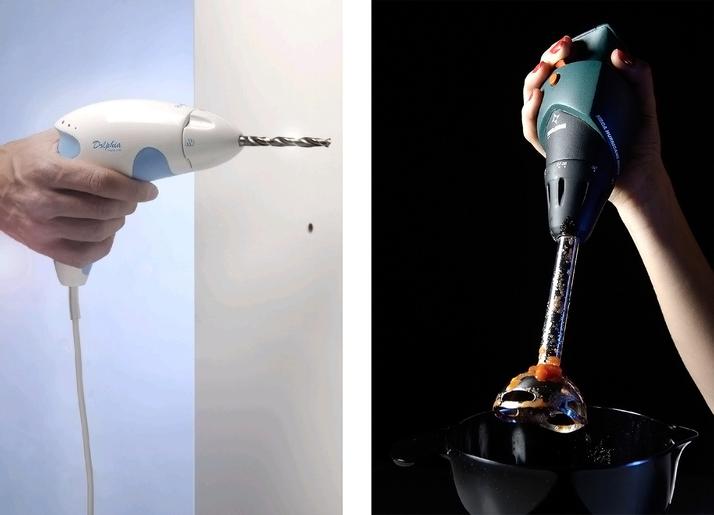

Designers are important by shaping the initial forms, functions and meanings of objects. Users, by their different way of interpreting, using, talking about and technologies further contribute to their social shaping. They define whether they experience things as gendered and whether they find them useful in articulating and performing their (gender) identities.Nelly Oudshoorn
The power of the designer cannot be understated. Since a vast majority of products are designed by men for women or for other men, the products intended for females end up being designed from a male perspective that do not completely consider their experience. For example, a man could easily operate a food processor because it does not require extra capabilities, however a woman could have trouble using a power tool because its weight might be too heavy.
The experience women could have with such tools, leads to a cycle where women develop a negative attitude to machinery, equipment and technology during childhood and school, which is further reinforced by advertising and design in our patriarchal society.
As a consequence of the industrial revolution and social roles the look of machinery is correlated with males and thus males' products. They are intentionally or unconsciously made to look more scientific or analytical. Take for instance, personal technological products such as shavers, which utilize form and color to denote femininity or difference.

Male shavers are mostly ‘masculine' looking, with matte black, silver and grey colors frequently used to resemble machinery. The number of visible parts in the products, such as screws, are also exaggerated in males' products to make the products look more complicated in contrast to female shavers in which the screws are hidden.
On the other hand the female electric shavers are gendered through their color and form. Female shavers usually come in the colors of white symbolizing purity or hygiene and added pastel colors for fashionability. Smooth and more curved surfaces tends to be more frequently used to make it appear more 'elegant' as and softer compared with their male counterparts.
The parts related with the technical aspects of the product are hidden beneath the surface. Even indicators about the functions of the products are less frequently used, and if used at all, pictograms are preferred. Thus, the male electric shavers signify masculinity through signs of technology and powerfulness, while the female shaver connotes hygiene, prettiness and fashionability so as to signify femininity.
Another difference is the usability of the products. The battery system of the philishave enables the user to take it with him wherever he goes, whereas the ladyshave is designed to be only rechargeable in the bathroom at home.
In fact, in an effort to make things lighter and more ‘feminine’, domestic tools are often rather flimsy in comparison to its powerful and industrial commercial counterparts. Many of these domestic tools, such as irons, vacuums, food mixers, brooms and dustpans etc…are made with appearance in mind, rather than function.
Overall, the alienation of women to advanced technology is largely due to design. After all, it was men who first started designing tools for women and these tools typically relied on stereotypical connotations of gender and were not sturdy enough for frequent use. Women were turned off by products designed “for men by men” such as power drills, as they were not designed with women in mind, making it difficult for them to use. Moreover, many industrial design products are actually just gendered replicas of the initial male prototypes. Hence, the cultural stereotype of technology as an activity for men continues to prevail.